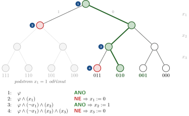
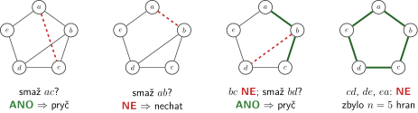
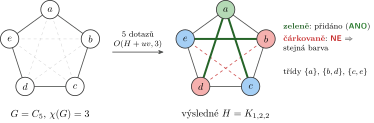
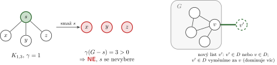
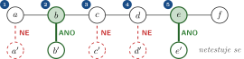

B.2 Typ 2: Self-redukce¶
Úloha 2 testu: „Self-redukce problému (tj. pomocí rozhodovací verze nalezněte konkrétní řešení problému).“ (6 bodů). Postup na papíře je v oddílu A.3.2.
B.2.1 Kde to ve skriptech je¶
- Hodnota optima:
- redukce hodnota optima TSP a důsledek 1.4 – binární vyhledávání přes práh \(k\), \(\lceil\log_2\mathrm{MAX}\rceil\) dotazů, proč to je polynomiální i pro binárně zapsané váhy.
- Řešení mazáním:
- redukce nalezení optimální kružnice TSP (oddíl 1.3.2) – hrany TSP se po jedné mažou a orákulum hlídá, že optimum zůstává; rámeček „Musíme znát přesné optimum“ ukazuje, proč nejdřív hodnota a pak řešení.
- Klika:
- Cvičení 2.4 (redukce hledání největší kliky) – \(\omega(G)\) binárním vyhledáváním, kliku mazáním vrcholů, celkem \(\lceil\log_2 n\rceil+n\) dotazů; stejný problém je úlohou 2 ukázkového testu (úloha 2).
- Řešení přidáváním omezení:
- Cvičení 3.1 (= cvičení 2.5) (redukce hledání 3-obarvení, totéž zadání má Cvičení 2.5) – 3-obarvení pomocí „palety“ (vynucování barev hranami, \(1+2|V|\) dotazů) a alternativně slepováním nesousedních vrcholů; vzorový invariant „aktuální graf je 3-obarvitelný“.
- Souvislosti:
- oddíl D.2 (přehled redukcí s orákulem) a redukce \(\prob{UC}\) pomocí \(\prob{Halt}\) (orákulová redukce ve vyčíslitelnosti – tam slouží k důkazu, že něco nejde).
- Úlohy navíc:
- oddíly „Úlohy navíc“ kapitol 4 až 11 mají každý aspoň jednu self-redukci ve formátu úlohy 2 testu. Optimum binárním vyhledáváním a pak „vyškrtávání“: úloha 4.2 (nejmenší pokrytí množinami), 4.5 (nejdelší společná podposloupnost, škrtají se písmena), 4.7 (rozmístění do nejmenšího počtu košů, slepují se dvojice předmětů), 6.6 (ohodnocení s nejméně jedničkami), 8.3 (nejhustší podgraf na \(k\) vrcholech), 9.6 (maximální řez, vrcholy se slučují pomocí vah). Bez optimalizace: 5.3 (přijímající větev nedeterministického stroje krok po kroku), 7.3 (\(\href{../ch-sat/ch-sat-nae-3-sat-not-all-equal.html#prob-nae}{\class{woo-pk-prob-nae}{\prob{NAE-3-SAT}}}\), kde nejde dosazovat – proměnné se porovnávají s \(x_1\)), 10.1 (exaktní pokrytí trojicemi) a 11.6 (rozdělení na poloviny, čísla se slučují do bloků). Úloha 4.6 – rozklad čísla na prvočinitele pomocí rozhodovací verze (binární vyhledávání nejmenšího dělitele, počet dotazů polynomiální v délce zápisu čísla). Ze sbírky: 7.9 (splňující ohodnocení dosazováním), 8.9 (největší nezávislá množina), 11.9 (hamiltonovská kružnice, vynucení hrany rozdělením) a těžší 4.9 (izomorfismus grafů, značky z klik).
B.2.2 Řešené úlohy: self-redukce¶
Typová úloha 2.1 [6 bodů]
Máte k dispozici orákulum, které pro zadanou formuli \(\varphi\) v konjunktivní normální formě (KNF) v jednom kroku odpoví, zda je splnitelná.
- Pomocí orákula najděte splňující ohodnocení formule \(\varphi\) s proměnnými \(x_1,\dots,x_n\), nebo oznamte, že neexistuje. Zdůvodněte, proč je výstup správný, a určete počet dotazů vzhledem k \(n\).
- Ukažte, že stačí přesně \(n\) dotazů.
Řešení
Redukce s orákulem: \(\href{../ch-cook/ch-cook-cook-levinova-veta.html#prob-sat}{\class{woo-pk-prob-sat}{\prob{SAT}}}\) – hledání ohodnocení \(\to\) \(\href{../ch-cook/ch-cook-cook-levinova-veta.html#prob-sat}{\class{woo-pk-prob-sat}{\prob{SAT}}}\) – rozhodovací verze. Jak: proměnné postupně fixujeme jednotkovými klauzulemi a orákulem hlídáme, že formule zůstává splnitelná.
a) Algoritmus.
- Zeptej se na \(\varphi\). Odpoví-li \(\NE\), ohodnocení neexistuje – konec.
- Polož \(\varphi_0:=\varphi\). Pro \(i=1,\dots,n\): zeptej se na \(\varphi_{i-1}\land(x_i)\). Při \(\ANO\) polož \(x_i:=1\) a \(\varphi_i:=\varphi_{i-1}\land(x_i)\), při \(\NE\) polož \(x_i:=0\) a \(\varphi_i:=\varphi_{i-1}\land(\lnot x_i)\).
- Vydej \((x_1,\dots,x_n)\).
Přidání jednotkové klauzule \((x_i)\) nebo \((\lnot x_i)\) zachová KNF, takže se ptáme pořád na instance téhož problému. (Stejně dobře lze \(x_i\) do formule dosadit a formuli zjednodušit.)
Invariant: \(\varphi_i\) je splnitelná a každé její splňující ohodnocení splňuje \(\varphi\) a má hodnoty \(x_1,\dots,x_i\) zvolené algoritmem.
- Na začátku platí: \(\varphi_0=\varphi\) je splnitelná podle prvního dotazu.
- Krok \(\ANO\): \(\varphi_{i-1}\land(x_i)\) je podle orákula splnitelná.
- Krok \(\NE\): \(\varphi_{i-1}\) je splnitelná (invariant), ale žádné její splňující ohodnocení nemá \(x_i=1\); každé ji tedy splňuje s \(x_i=0\), a proto je splnitelná i \(\varphi_{i-1}\land(\lnot x_i)\).
- Přidáváme jen klauzule, takže splňující ohodnocení \(\varphi_i\) splňuje i \(\varphi\).
Po \(n\) krocích je \(\varphi_n\) splnitelná a všechny proměnné má zafixované jednotkovými klauzulemi; jediné ohodnocení, které ji může splnit, je to vydané, a to tedy splňuje \(\varphi\).
Počet dotazů: \(1+n\). Každá dotazovaná formule má nejvýše o \(n\) jednotkových klauzulí víc než \(\varphi\), takže je polynomiálně velká a algoritmus je polynomiální vzhledem k volání orákula.

Ukázka (nad rámec přednášky) na formuli \(\varphi=(\lnot x_1\lor x_2)\land(\lnot x_1\lor\lnot x_2)\land(x_2\lor x_3)\land(\lnot x_2\lor\lnot x_3)\) se splňujícími ohodnoceními \(010\) a \(001\) (tučně). Strom obsahuje všechna částečná ohodnocení, levá větev je \(x_i=1\), pravá \(x_i=0\); čísla u vrcholů jsou pořadí dotazů. Všimni si: algoritmus projde jen jednu cestu od kořene k listu (zeleně). Odpověď \(\NE\) (červeně) odřízne celý podstrom a do větve \(x_i=0\) se jde bez dalšího dotazu, takže je dotazů \(1+n=4\), ne \(2^n\).
b) Přesně \(n\) dotazů. Úvodní dotaz vynecháme a provedeme jen krok 2 (\(n\) dotazů). Na konci přímo (bez orákula, v polynomiálním čase) dosadíme vydané ohodnocení do \(\varphi\). Splňuje-li ji, vydáme ho; jinak oznámíme, že \(\varphi\) splnitelná není. Je-li \(\varphi\) splnitelná, platí invariant z části a) a ohodnocení ji splní; není-li splnitelná, žádné ohodnocení ji nesplní a test to pozná.
Typová úloha 2.2 [6 bodů]
Máte k dispozici orákulum, které pro zadaný graf \(G\) a číslo \(k\) v jednom kroku odpoví, zda \(G\) má vrcholové pokrytí velikosti nejvýše \(k\) (množinu vrcholů, která obsahuje aspoň jeden konec každé hrany).
- Pomocí orákula spočtěte velikost \(\tau(G)\) nejmenšího vrcholového pokrytí grafu \(G\).
- Pomocí orákula najděte některé nejmenší vrcholové pokrytí grafu \(G\) (vydejte jeho vrcholy).
U obou částí odhadněte počet dotazů vzhledem k \(n=|V(G)|\) a zdůvodněte, proč je výstup správný.
Řešení
Redukce s orákulem: \(\href{../ch-is/ch-is-vertex-cover.html#prob-vc}{\class{woo-pk-prob-vc}{\prob{Vertex Cover}}}\) – nejmenší pokrytí \(\to\) \(\href{../ch-is/ch-is-vertex-cover.html#prob-vc}{\class{woo-pk-prob-vc}{\prob{Vertex Cover}}}\) – rozhodovací verze. Jak: \(\tau(G)\) binárním vyhledáváním, pokrytí odebíráním vrcholů, u nichž orákulum potvrdí, že s nimi optimum zůstává dosažitelné.
a) Hodnota \(\tau(G)\). Platí \(0\le\tau(G)\le n\) a odpověď je monotónní v \(k\): má-li \(G\) pokrytí velikosti nejvýše \(k\), má ho i pro každé větší \(k\). Binární vyhledávání na intervalu \([lo,hi]=[0,n]\) s invariantem \(lo\le\tau(G)\le hi\): pro \(mid=\lfloor(lo+hi)/2\rfloor\) se zeptej na \((G,mid)\); při \(\ANO\) je \(\tau(G)\le mid\), polož \(hi:=mid\), při \(\NE\) je \(\tau(G)>mid\), polož \(lo:=mid+1\). Skonči při \(lo=hi\), to je \(\tau(G)\). Interval má \(n+1\) hodnot a každý dotaz ho zhruba rozpůlí: nejvýše \(\lceil\log_2(n+1)\rceil\) dotazů.
b) Nalezení pokrytí. Polož \(C:=\emptyset\), \(G':=G\), \(k':=\tau(G)\). Pro každý vrchol \(v\) grafu \(G\) (v libovolném pořadí):
- je-li \(k'=0\), skonči (zdůvodnění níže);
- jinak se zeptej na \((G'-v,\ k'-1)\), kde \(G'-v\) vznikne smazáním \(v\) i se všemi jeho hranami;
- při \(\ANO\) přidej \(v\) do \(C\), polož \(G':=G'-v\) a \(k':=k'-1\); při \(\NE\) nech \(G'\) i \(k'\) beze změny.
Na konci vydej \(C\).
Invariant: \(G'\) má pokrytí velikosti nejvýše \(k'\), \(|C|+k'=\tau(G)\) a pro každé pokrytí \(D\) grafu \(G'\) je \(C\cup D\) pokrytím \(G\). Na začátku platí podle a). Krok \(\ANO\) ho zachová: \(G'-v\) má pokrytí \(D'\) velikosti nejvýše \(k'-1\) a \(D'\cup\{v\}\) pokrývá \(G'\) (hrany smazané s \(v\) pokrývá \(v\)). Krok \(\NE\) nic nemění.
Proč na konci nezbude žádná hrana. Vrchol \(v\), u něhož orákulum řeklo \(\NE\), neleží v žádném pokrytí grafu \(G'\) velikosti nejvýše \(k'\) (jinak by \(G'-v\) měl pokrytí velikosti \(k'-1\)). To platí i později: graf se jen zmenšuje o vybrané vrcholy a \(k'\) klesá spolu s nimi, takže pokrytí pozdějšího grafu obsahující \(v\) by spolu s mezitím vybranými vrcholy dalo zakázané pokrytí dřívějšího grafu. Na konci (po všech vrcholech nebo při \(k'=0\)) tedy má \(G'\) pokrytí velikosti nejvýše \(k'\), které neobsahuje žádný ze zbylých vrcholů (všechny zbylé dostaly \(\NE\), nebo je \(k'=0\)) – to je prázdná množina, takže \(G'\) nemá hrany. Podle invariantu je pak \(C=C\cup\emptyset\) pokrytí \(G\) a \(|C|=\tau(G)-k'\le\tau(G)\); menší než \(\tau(G)\) být nemůže, je tedy nejmenší.
Počet dotazů: v b) nejvýše jeden na vrchol, tedy nejvýše \(n\); celkem s a) nejvýše \(\lceil\log_2(n+1)\rceil+n=O(n)\) dotazů na grafy velikosti nejvýše \(|G|\).
Pozor: část b) musí běžet s přesným \(k'=\tau(G)\). S větším prahem by orákulum souhlasilo i s vrcholy, které v žádném nejmenším pokrytí nejsou, a výsledek by byl jen nějaké pokrytí velikosti nejvýše \(k\) – stejná past jako u TSP (redukce nalezení optimální kružnice TSP).
Typová úloha 2.3 [6 bodů]
Máte k dispozici orákulum, které pro zadaný neorientovaný graf \(G\) v jednom kroku odpoví, zda \(G\) obsahuje hamiltonovskou kružnici (kružnici procházející každým vrcholem právě jednou). Pomocí orákula najděte hamiltonovskou kružnici grafu \(G=(V,E)\) (vydejte její hrany), nebo oznamte, že neexistuje. Odhadněte počet dotazů vzhledem k \(n=|V|\) a \(m=|E|\) a zdůvodněte, proč je výstup správný.
Řešení
Redukce s orákulem: \(\href{../ch-cisla/ch-cisla-hamiltonovska-cesta.html#ch-cisla-dhp-hc}{\class{woo-pk-pojem-hc}{\prob{HC}}}\) – nalezení kružnice \(\to\) \(\href{../ch-cisla/ch-cisla-hamiltonovska-cesta.html#ch-cisla-dhp-hc}{\class{woo-pk-pojem-hc}{\prob{HC}}}\) – rozhodovací verze. Jak: hrany po jedné mažeme a orákulem hlídáme, že hamiltonovská kružnice v grafu zůstává.
Algoritmus.
- Zeptej se na \(G\). Při \(\NE\) kružnice neexistuje – konec.
- \(H:=G\). Pro každou hranu \(e\in E\) (v libovolném pevném pořadí): zeptej se na \(H-e\). Při \(\ANO\) polož \(H:=H-e\) (hrana není potřeba), při \(\NE\) nech \(e\) v \(H\).
- Vydej hrany grafu \(H\).
Invariant: \(H\) má hamiltonovskou kružnici. Platí na začátku (první dotaz) a krok \(\ANO\) ho zachová podle odpovědi orákula, krok \(\NE\) graf nemění.
Proč na konci zbude právě kružnice. Podle invariantu má výsledné \(H\) hamiltonovskou kružnici \(K\). Kdyby v \(H\) zůstala hrana \(e\notin K\): v okamžiku, kdy se \(e\) testovala, byl aktuální graf nadgrafem výsledného \(H\) (hrany se jen mažou), takže graf bez \(e\) obsahoval \(K\) a orákulum by odpovědělo \(\ANO\) – hrana by byla smazaná. Spor. Tedy \(H=K\): zbude přesně \(n\) hran a ty tvoří hamiltonovskou kružnici.
Počet dotazů: \(1+m\), kde \(m\le\binom n2\), tedy \(O(n^2)\). Každý dotaz je na podgraf \(G\), takže algoritmus je polynomiální vzhledem k volání orákula.

Ukázka na grafu s hranami \(ac,ab,bc,bd,cd,de,ea\) (v tomto pořadí), \(1+7=8\) dotazů. Hrana \(bc\) smazat nejde: bez \(ac\) a \(bc\) by vrchol \(c\) měl jen souseda \(d\).
Typová úloha 2.4 [6 bodů]
Máte k dispozici orákulum, které pro zadaná kladná celá čísla \(a_1,\dots,a_n\) a cíl \(T\ge 1\) v jednom kroku odpoví, zda některá podmnožina čísel má součet přesně \(T\) (problém \(\href{../ch-cisla/ch-cisla-ciselne-problemy.html#prob-subsetsum}{\class{woo-pk-prob-subsetsum}{\prob{Subset Sum}}}\), definice 11.8).
- Pomocí orákula najděte množinu indexů \(I\subseteq\{1,\dots,n\}\) se součtem \(\sum_{i\in I}a_i=T\), nebo oznamte, že neexistuje.
- Pomocí téhož orákula najděte takovou množinu \(I\) s nejmenším počtem prvků.
U obou částí odhadněte počet dotazů vzhledem k \(n\) a zdůvodněte, proč je výstup správný.
Řešení
Redukce s orákulem: \(\href{../ch-cisla/ch-cisla-ciselne-problemy.html#prob-subsetsum}{\class{woo-pk-prob-subsetsum}{\prob{Subset Sum}}}\) – nalezení podmnožiny \(\to\) \(\href{../ch-cisla/ch-cisla-ciselne-problemy.html#prob-subsetsum}{\class{woo-pk-prob-subsetsum}{\prob{Subset Sum}}}\) – rozhodovací verze. Jak: čísla po jednom vyškrtáváme a orákulem hlídáme, že ze zbylých jde součet \(T\) pořád složit; v b) čísla posuneme o velkou konstantu, aby cíl určoval i počet vybraných prvků.
Značení: \(O(b_1,\dots,b_r;\,S)\) je odpověď orákula na čísla \(b_1,\dots,b_r\) a cíl \(S\). Seznam čísel smí být i prázdný; pak je odpověď \(\NE\) (prázdná podmnožina má součet \(0<T\)) a lze ji dát i bez orákula.
a) Algoritmus.
- Zeptej se \(O(a_1,\dots,a_n;\,T)\). Při \(\NE\) podmnožina neexistuje – konec.
- Polož \(R:=\{1,\dots,n\}\) (indexy čísel, která zbyla). Pro \(i=1,\dots,n\): zeptej se na čísla s indexy \(R\setminus\{i\}\) a cíl \(T\). Při \(\ANO\) číslo \(a_i\) vyškrtni (\(R:=R\setminus\{i\}\)), při \(\NE\) ho ponech.
- Vydej \(I:=R\).
Invariant: některá podmnožina čísel s indexy v \(R\) má součet \(T\). Na začátku platí podle prvního dotazu, krok \(\ANO\) ho zachová podle odpovědi orákula a krok \(\NE\) množinu \(R\) nemění.
Proč zbylá čísla dají přesně \(T\). Podle invariantu existuje \(S\subseteq R\) (výsledné \(R\)) se součtem \(T\). Kdyby v \(R\) zůstal index \(j\notin S\): když se \(j\) testovalo, byla tehdejší množina \(R'\) nadmnožinou výsledné \(R\) (indexy jen ubývají), takže \(S\subseteq R'\setminus\{j\}\) a orákulum by odpovědělo \(\ANO\) – číslo \(a_j\) by bylo vyškrtnuté. Spor. Tedy \(R=S\) a \(\sum_{i\in I}a_i=T\).
Počet dotazů: přesně \(1+n\) (nejvýše \(1+n\), pokud dotaz na prázdný seznam zodpovíme bez orákula). Každý dotaz je na podseznam vstupu se stejným cílem, takže je nejvýše tak velký jako vstup.
Příklad. \(a=(7,3,5,2,6)\), \(T=10\) (řešení jsou \(\{7,3\}\) a \(\{3,5,2\}\)):
| dotaz | odpověď | akce |
|---|---|---|
| \(O(7,3,5,2,6;\,10)\) | \(\ANO\) | řešení existuje |
| \(O(3,5,2,6;\,10)\) | \(\ANO\) | \(7\) vyškrtni |
| \(O(5,2,6;\,10)\) | \(\NE\) | \(3\) ponech |
| \(O(3,2,6;\,10)\) | \(\NE\) | \(5\) ponech |
| \(O(3,5,6;\,10)\) | \(\NE\) | \(2\) ponech |
| \(O(3,5,2;\,10)\) | \(\ANO\) | \(6\) vyškrtni |
Výsledek \(\{3,5,2\}\) po \(1+5=6\) dotazech. Které z řešení vyjde, záleží na pořadí; podmnožina \(\{7,3\}\) se dvěma prvky by byla menší – to řeší část b).
b) Nejmenší počet prvků. Orákulum odpovídá jen na „součet přesně \(S\)“, o počtu prvků nic neví. Počet proto zakódujeme do čísel: polož \(A:=\sum_i a_i\), \(M:=A+T+1\) a \(a_i':=a_i+M\). Pro množinu indexů \(J\) s \(|J|=j\) je \(\sum_{i\in J}a_i'=\sum_{i\in J}a_i+jM\).
Tvrzení: pro každé \(k\ge1\) platí \(O(a_1',\dots,a_n';\,T+kM)=\ANO\), právě když existuje \(J\) s \(|J|=k\) a \(\sum_{i\in J}a_i=T\).
- \(\Leftarrow\): dosazením je \(\sum_{i\in J}a_i'=T+kM\).
- \(\Rightarrow\): nechť \(\sum_{i\in J}a_i'=T+kM\) a \(|J|=j\). Pak \((j-k)M=T-\sum_{i\in J}a_i\). Pravá strana leží v intervalu \([T-A,\,T]\), má tedy absolutní hodnotu nejvýše \(\max(A,T)<M\). Násobek \(M\) s absolutní hodnotou menší než \(M\) je jen \(0\), takže \(j=k\) a \(\sum_{i\in J}a_i=T\).
Algoritmus:
- Pro \(k=1,2,\dots,n\) se ptej \(O(a_1',\dots,a_n';\,T+kM)\). První \(k\) s odpovědí \(\ANO\) označ \(k^*\). Nepřijde-li \(\ANO\) vůbec, podmnožina se součtem \(T\) neexistuje (podle tvrzení by jinak některé \(k\le n\) prošlo).
- Na instanci \((a_1',\dots,a_n';\,T+k^*M)\) pusť vyškrtávání z a) bez úvodního dotazu (odpověď \(\ANO\) už známe) a vydej zbylé indexy \(I\).
Správnost: podle a) je \(\sum_{i\in I}a_i'=T+k^*M\), podle tvrzení tedy \(|I|=k^*\) a \(\sum_{i\in I}a_i=T\). Menší počet prvků mít řešení nemůže: pro každé \(k<k^*\) orákulum odpovědělo \(\NE\), takže podle tvrzení žádná \(k\)-prvková podmnožina se součtem \(T\) není.
Počet dotazů: v kroku 1 nejvýše \(n\) (přesně \(k^*\)), v kroku 2 nejvýše \(n\), celkem nejvýše \(2n\). Nová čísla jsou nejvýše \(T+nM\le(n+1)(A+T+1)\), mají tedy jen o \(O(\log n)\) bitů víc než vstup – dotazy jsou polynomiálně velké.
Proč ne binární vyhledávání přes \(k\): odpověď „existuje \(k\)-prvková podmnožina se součtem \(T\)“ není v \(k\) monotónní. V příkladu z a) vyjde pro \(k=1,\dots,5\) postupně \(\NE,\ANO,\ANO,\NE,\NE\).
Příklad b). \(A=23\), \(M=34\), \(a'=(41,37,39,36,40)\). Dotaz \(k=1\) (cíl \(44\)): \(\NE\); \(k=2\) (cíl \(78\)): \(\ANO\), tedy \(k^*=2\). Vyškrtávání s cílem \(78\): \(41\) \(\NE\) (ponech), \(37\) \(\NE\) (ponech), \(39\), \(36\), \(40\) \(\ANO\) (vyškrtni). Zbude \(\{41,37\}\), tj. \(I=\{1,2\}\) a \(7+3=10\); celkem \(2+5=7\) dotazů.
Typová úloha 2.5 [6 bodů]
Máte k dispozici orákulum, které pro zadaný graf \(G\) a číslo \(k\) v jednom kroku odpoví, zda je \(G\) obarvitelný \(k\) barvami (vrcholům lze přiřadit barvy z \(\{1,\dots,k\}\) tak, aby sousední vrcholy měly různé barvy).
- Pomocí orákula spočtěte chromatické číslo \(\chi(G)\), tj. nejmenší \(k\), pro které je \(G\) obarvitelný \(k\) barvami.
- Pomocí orákula najděte obarvení grafu \(G\) pomocí \(\chi(G)\) barev (vydejte barvu každého vrcholu).
U obou částí odhadněte počet dotazů vzhledem k \(n=|V(G)|\) a \(m=|E(G)|\) a zdůvodněte, proč je výstup správný.
Řešení
Redukce s orákulem: \(\href{../ch-resice-sat/ch-resice-sat-redukce-do-sat.html#ch-resice-sat-k-barevnost}{\class{woo-pk-pojem-coloring}{\prob{Coloring}}}\) – optimální obarvení \(\to\) \(\href{../ch-resice-sat/ch-resice-sat-redukce-do-sat.html#ch-resice-sat-k-barevnost}{\class{woo-pk-pojem-coloring}{\prob{Coloring}}}\) – rozhodovací verze. Jak: \(\chi(G)\) binárním vyhledáváním, pak mezi nesousední vrcholy přidáváme hrany, dokud graf zůstává obarvitelný \(\chi(G)\) barvami; barvy pak přečteme z výsledného grafu.
Značení: \(O(H,k)\) je odpověď orákula, \(H+uv\) je graf \(H\) s přidanou hranou \(uv\). Pro \(n=0\) není co barvit, dál \(n\ge1\).
a) Hodnota \(\chi(G)\). Odpověď je monotónní v \(k\): obarvení \(k\) barvami je i obarvením \(k+1\) barvami. Dále \(1\le\chi(G)\le n\) (každý vrchol může mít vlastní barvu). Binární vyhledávání na \([lo,hi]=[1,n]\) s invariantem \(lo\le\chi(G)\le hi\): pro \(mid=\lfloor(lo+hi)/2\rfloor\) se zeptej \(O(G,mid)\); při \(\ANO\) je \(\chi(G)\le mid\), polož \(hi:=mid\), při \(\NE\) je \(\chi(G)>mid\), polož \(lo:=mid+1\). Při \(lo=hi\) skonči, to je \(\chi(G)\). Interval má \(n\) hodnot a každý dotaz ho zhruba rozpůlí: nejvýše \(\lceil\log_2 n\rceil\) dotazů.
b) Myšlenka. Hrana \(uv\) vynucuje různé barvy \(u\) a \(v\). Když po přidání hrany \(uv\) graf přestane být obarvitelný \(\chi(G)\) barvami, musí mít \(u\) a \(v\) v každém takovém obarvení barvu stejnou. Hrany přidáváme, dokud to jde; nakonec je u každé dvojice jasné, zda mají barvu stejnou, nebo různou.
Algoritmus:
- Spočti \(w:=\chi(G)\) podle a) a polož \(H:=G\).
- Pro každou dvojici \(\{u,v\}\) vrcholů, které v \(G\) nesousedí (v pevném pořadí): zeptej se \(O(H+uv,\,w)\). Při \(\ANO\) polož \(H:=H+uv\), při \(\NE\) nech \(H\) beze změny.
- Bez orákula: procházej vrcholy; vrchol dostane barvu některého už obarveného vrcholu, se kterým v \(H\) nesousedí, a když takový není, dostane novou barvu. Vydej barvy.
Invariant: \(G\subseteq H\) a \(H\) je obarvitelný \(w\) barvami. Na začátku platí podle a), krok \(\ANO\) ho zachová podle odpovědi orákula, krok \(\NE\) nic nemění.
Klíčové tvrzení. Nechť \(c\) je libovolné obarvení výsledného \(H\) barvami \(1,\dots,w\) (existuje podle invariantu). Pro různé vrcholy \(u,v\) platí: \(uv\notin E(H)\iff c(u)=c(v)\).
- \(\Leftarrow\): obarvení je platné, takže vrcholy stejné barvy nesousedí.
- \(\Rightarrow\): hrany se jen přidávají, takže \(u,v\) nesousedily ani v \(G\) a dvojice \(\{u,v\}\) se testovala. Odpověď byla \(\NE\) (jinak by \(uv\in E(H)\)): graf \(H'+uv\) není obarvitelný \(w\) barvami, kde \(H'\subseteq H\) je tehdejší graf. Kdyby \(c(u)\ne c(v)\), bylo by \(c\) platným obarvením grafu \(H+uv\), a tedy i jeho podgrafu \(H'+uv\) – spor.
Proč krok 3 vydá obarvení \(\chi(G)\) barvami. Podle tvrzení je „nesousedí v \(H\)“ (spolu s \(u=v\)) totéž co „mají v \(c\) stejnou barvu“; třídy jsou tedy barevné třídy \(c\) a \(H\) je úplný multipartitní graf (třídy jsou nezávislé, mezi různými třídami vedou všechny hrany). Krok 3 dá vrcholu barvu dříve obarveného vrcholu z jeho třídy, takže každá třída má jednu barvu a různé třídy různé barvy. Třídy jsou nezávislé v \(H\supseteq G\), jde tedy o platné obarvení \(G\). Tříd je nejvýše \(w\) (barevné třídy obarvení \(c\) s \(w\) barvami) a aspoň \(\chi(G)=w\) (je to platné obarvení \(G\)). Barev je tedy přesně \(\chi(G)\).
Počet dotazů: v b) jeden na každou nesousední dvojici, tj. \(\binom n2-m\); celkem \(\lceil\log_2 n\rceil+\binom n2-m=O(n^2)\). Každý dotaz je na graf s \(n\) vrcholy, krok 3 je polynomiální bez orákula.
Příklad. \(G=C_5\) s hranami \(ab,bc,cd,de,ea\). Binární vyhledávání: \(O(G,3)=\ANO\), \(O(G,2)=\NE\) (lichá kružnice), tedy \(\chi=3\). Nesousední dvojice v pořadí \(ac,ad,bd,be,ce\):
| dotaz | odpověď | akce |
|---|---|---|
| \(O(G+ac,3)\) | \(\ANO\) | hranu \(ac\) přidej |
| \(O(H+ad,3)\) | \(\ANO\) | hranu \(ad\) přidej |
| \(O(H+bd,3)\) | \(\NE\) | \(a,b,c,d\) by tvořily \(K_4\) |
| \(O(H+be,3)\) | \(\ANO\) | hranu \(be\) přidej |
| \(O(H+ce,3)\) | \(\NE\) | \(a,c,d,e\) by tvořily \(K_4\) |

Vlevo \(C_5\) se zkoušenými dvojicemi (šedě čárkovaně), vpravo výsledný graf \(H\): zeleně přidané hrany, červeně čárkovaně dvojice s odpovědí \(\NE\). Všimni si: nesousední dvojice v \(H\) jsou přesně \(\{b,d\}\) a \(\{c,e\}\), takže třídy jsou \(\{a\},\{b,d\},\{c,e\}\) a krok 3 dá tři barvy. Celkem \(2+5=7\) dotazů.
Totéž lze udělat slepováním nesousedních vrcholů místo přidávání hran (alternativa u Cvičení 3.1 (= cvičení 2.5), tam pro tři barvy).
Typová úloha 2.6 [6 bodů]
Máte k dispozici orákulum pro rozhodovací verzi problému \(\href{../ch-cisla/ch-cisla-ciselne-problemy.html#prob-knapsack}{\class{woo-pk-prob-knapsack}{\prob{Knapsack}}}\) (problém 11.11): pro předměty s kladnými celočíselnými váhami \(w_1,\dots,w_n\) a cenami \(c_1,\dots,c_n\), nosnost \(W\) a cenu \(C\) v jednom kroku odpoví, zda lze vybrat předměty s celkovou váhou nejvýše \(W\) a celkovou cenou alespoň \(C\). Čísla jsou na vstupu zapsána binárně, \(L\) je délka vstupu v bitech.
- Pomocí orákula spočtěte nejvyšší dosažitelnou cenu \(\mathrm{OPT}\) (maximum celkové ceny přes výběry s celkovou váhou nejvýše \(W\)). Počet dotazů odhadněte vzhledem k \(L\) a vysvětlete, proč postupné dotazy na \(C=1,2,3,\dots\) polynomiální nejsou.
- Pomocí orákula najděte výběr předmětů s celkovou váhou nejvýše \(W\) a cenou \(\mathrm{OPT}\). Odhadněte počet dotazů vzhledem k \(n\) a zdůvodněte, proč je výstup správný.
Řešení
Redukce s orákulem: \(\href{../ch-cisla/ch-cisla-ciselne-problemy.html#prob-knapsack}{\class{woo-pk-prob-knapsack}{\prob{Knapsack}}}\) – optimalizační verze \(\to\) \(\href{../ch-cisla/ch-cisla-ciselne-problemy.html#prob-knapsack}{\class{woo-pk-prob-knapsack}{\prob{Knapsack}}}\) – rozhodovací verze. Jak: \(\mathrm{OPT}\) binárním vyhledáváním přes cenu \(C\), výběr vyškrtáváním předmětů s prahem \(C=\mathrm{OPT}\).
Značení: \(O(P;\,W,C)\) je odpověď orákula pro množinu předmětů \(P\) (s jejich vahami a cenami), \(\Sigma:=\sum_i c_i\). Nosnost je \(W\ge0\). Množina \(P\) smí být i prázdná; pak je odpověď \(\ANO\), právě když \(C\le0\), a lze ji dát i bez orákula.
a) Hodnota \(\mathrm{OPT}\). Odpověď je monotónní v \(C\): výběr s cenou alespoň \(C\) má cenu alespoň každé \(C'\le C\). Dále \(O(\cdot;\,W,0)=\ANO\) (prázdný výběr) a \(0\le\mathrm{OPT}\le\Sigma\). Binární vyhledávání na \([lo,hi]=[0,\Sigma]\) s invariantem \(lo\le\mathrm{OPT}\le hi\): pro \(mid=\lceil(lo+hi)/2\rceil\) se zeptej \(O(\text{všechny};\,W,mid)\); při \(\ANO\) je \(\mathrm{OPT}\ge mid\), polož \(lo:=mid\), při \(\NE\) je \(\mathrm{OPT}<mid\), polož \(hi:=mid-1\). Při \(lo=hi\) skonči, to je \(\mathrm{OPT}\). Interval má \(\Sigma+1\) hodnot: nejvýše \(\lceil\log_2(\Sigma+1)\rceil\) dotazů.
Odhad vzhledem k \(L\). Nechť \(\ell(c_i)\) je počet bitů binárního zápisu \(c_i\), tedy \(c_i+1\le 2^{\ell(c_i)}\). Roznásobením je \(\prod_i(1+c_i)\ge 1+\sum_i c_i\) (součin obsahuje členy \(1\) a \(c_1,\dots,c_n\), ostatní jsou nezáporné). Proto
takže stačí nejvýše \(L\) dotazů. Každý dotaz má stejné předměty a \(W\) jako vstup a číslo \(C\le\Sigma\), je tedy polynomiálně velký.
Proč ne \(C=1,2,3,\dots\): tak by bylo potřeba až \(\mathrm{OPT}+1\) dotazů a \(\mathrm{OPT}\) může být exponenciální v \(L\): jediný předmět s \(w_1=W=1\) a \(c_1=2^{t}\) má vstup délky \(\Theta(t)\), ale \(\mathrm{OPT}=2^t\). Takový postup je jen pseudopolynomiální (definice 11.13).
b) Algoritmus.
- Spočti \(\mathrm{OPT}\) podle a) a polož \(R:=\{1,\dots,n\}\).
- Pro \(i=1,\dots,n\): zeptej se \(O(R\setminus\{i\};\,W,\mathrm{OPT})\). Při \(\ANO\) předmět \(i\) vyškrtni (\(R:=R\setminus\{i\}\)), při \(\NE\) ho ponech.
- Vydej \(R\).
Invariant: v \(R\) existuje výběr s váhou nejvýše \(W\) a cenou alespoň \(\mathrm{OPT}\). Na začátku platí podle definice \(\mathrm{OPT}\), krok \(\ANO\) ho zachová podle odpovědi orákula, krok \(\NE\) nic nemění.
Proč zbylé předměty jsou optimální výběr. Podle invariantu existuje \(S\subseteq R\) (výsledné \(R\)) s váhou nejvýše \(W\) a cenou alespoň \(\mathrm{OPT}\). Kdyby v \(R\) zůstal předmět \(j\notin S\): v okamžiku testu byla tehdejší množina \(R'\supseteq R\), takže \(S\subseteq R'\setminus\{j\}\) a orákulum by řeklo \(\ANO\) – předmět by byl vyškrtnutý. Spor. Tedy \(R=S\): váha je nejvýše \(W\) a cena alespoň \(\mathrm{OPT}\), víc být nemůže podle definice \(\mathrm{OPT}\). Cena je tedy přesně \(\mathrm{OPT}\).
Počet dotazů: v b) nejvýše \(n\), s a) celkem nejvýše \(\lceil\log_2(\Sigma+1)\rceil+n\le L+n\le 2L\) (každý předmět zabírá na vstupu aspoň jeden bit, takže \(n\le L\)).
Pozor: vyškrtávání musí běžet s přesným \(\mathrm{OPT}\). S menším prahem \(C\) by orákulum dovolilo vyškrtnout i předmět nutný pro optimum a výsledek by měl cenu jen alespoň \(C\).
Příklad. Předměty \((w,c)\): \(1{:}\,(3,4)\), \(2{:}\,(4,5)\), \(3{:}\,(2,3)\), \(4{:}\,(5,6)\), nosnost \(W=9\), \(\Sigma=18\):
| dotaz | odpověď | akce | interval |
|---|---|---|---|
| \(O(\{1,2,3,4\};\,9,9)\) | \(\ANO\) | \(lo:=9\) | \([0,18]\to[9,18]\) |
| \(O(\{1,2,3,4\};\,9,14)\) | \(\NE\) | \(hi:=13\) | \([9,13]\) |
| \(O(\{1,2,3,4\};\,9,11)\) | \(\ANO\) | \(lo:=11\) | \([11,13]\) |
| \(O(\{1,2,3,4\};\,9,12)\) | \(\ANO\) | \(lo:=12\) | \([12,13]\) |
| \(O(\{1,2,3,4\};\,9,13)\) | \(\NE\) | \(hi:=12\) | \(\mathrm{OPT}=12\) |
| \(O(\{2,3,4\};\,9,12)\) | \(\NE\) | \(1\) ponech | |
| \(O(\{1,3,4\};\,9,12)\) | \(\NE\) | \(2\) ponech | |
| \(O(\{1,2,4\};\,9,12)\) | \(\NE\) | \(3\) ponech | |
| \(O(\{1,2,3\};\,9,12)\) | \(\ANO\) | \(4\) vyškrtni |
Výsledek \(\{1,2,3\}\) s váhou \(9\) a cenou \(12\), celkem \(5+4=9\) dotazů (\(\lceil\log_2 19\rceil=5\)).
Typová úloha 2.7 [6 bodů]
Množina \(D\subseteq V\) je dominující v grafu \(G=(V,E)\), pokud každý vrchol mimo \(D\) má souseda v \(D\); \(\gamma(G)\) je velikost nejmenší dominující množiny. Máte k dispozici orákulum, které pro zadaný graf \(G\) a číslo \(k\) v jednom kroku odpoví, zda \(G\) má dominující množinu velikosti nejvýše \(k\).
- Pomocí orákula spočtěte \(\gamma(G)\).
- Ukažte na příkladu, že postup z vrcholového pokrytí (typová úloha 2.2: zeptat se na \((G-v,\ k-1)\) a při \(\ANO\) dát \(v\) do množiny) dominující množinu najít nemusí.
- Pomocí orákula najděte nejmenší dominující množinu grafu \(G\).
U částí a) a c) odhadněte počet dotazů vzhledem k \(n=|V|\) a zdůvodněte, proč je výstup správný. Nápověda: jak přidáním nového vrcholu vynutit, aby vrchol \(v\) v dominující množině byl?
Řešení
Redukce s orákulem: \(\href{../ch-is/sec-cv3.html#cv-3-6}{\class{woo-pk-pojem-dominating-set}{\prob{Dominating Set}}}\) – nejmenší dominující množina \(\to\) \(\href{../ch-is/sec-cv3.html#cv-3-6}{\class{woo-pk-pojem-dominating-set}{\prob{Dominating Set}}}\) – rozhodovací verze. Jak: \(\gamma(G)\) binárním vyhledáváním, množinu po vrcholech zafixováním vrcholu přidaným listem a orákulem hlídáme, že dominující množina velikosti \(\gamma(G)\) pořád existuje.
Značení: \(O(H,k)\) je odpověď orákula. Pro \(n=0\) je výstupem prázdná množina, dál \(n\ge1\).
a) Hodnota \(\gamma(G)\). Odpověď je monotónní v \(k\) (otázka zní „nejvýše \(k\)“). Neprázdný graf potřebuje aspoň jeden vrchol a celé \(V\) je dominující, tedy \(1\le\gamma(G)\le n\). Binární vyhledávání na \([lo,hi]=[1,n]\) s invariantem \(lo\le\gamma(G)\le hi\): pro \(mid=\lfloor(lo+hi)/2\rfloor\) se zeptej \(O(G,mid)\); při \(\ANO\) polož \(hi:=mid\), při \(\NE\) polož \(lo:=mid+1\); při \(lo=hi\) je to \(\gamma(G)\). Nejvýše \(\lceil\log_2 n\rceil\) dotazů.
b) Proč nestačí mazat vrcholy. Hvězda \(K_{1,3}\) se středem \(s\) a listy \(x,y,z\): \(\gamma=1\) a jediná nejmenší dominující množina je \(\{s\}\). Postup z vrcholového pokrytí se ptá:
- \(O(G-s,\,0)\): graf \(G-s\) jsou tři izolované vrcholy, \(\gamma(G-s)=3\), odpověď \(\NE\) – střed se nevybere;
- \(O(G-x,\,0)\), \(O(G-y,\,0)\), \(O(G-z,\,0)\): neprázdný graf nemá dominující množinu velikosti \(0\), vždy \(\NE\).
Výstup je \(\emptyset\), což dominující množina není. Příčina: u vrcholového pokrytí smazání \(v\) i s hranami přesně odpovídá „\(v\) je v pokrytí, jeho hrany jsou vyřízené“. U dominující množiny smazání \(v\) zároveň ruší požadavek „\(v\) musí být dominován“ a odebírá \(v\) jako možného dominátora sousedů – zbylý graf neodpovídá volbě „\(v\in D\)“. Nepomůže ani smazat celé uzavřené okolí \(N[v]\): sousedé \(v\) mohou dál dominovat jiné vrcholy. (Vrchol \(v\) se sousedy \(u,p,q\) a vrchol \(u\) s dalšími listy \(x,y\): jediná nejmenší množina je \(\{u,v\}\), ale \(G-N[v]\) jsou izolované \(x,y\) s \(\gamma=2>1\).)

Vlevo protipříklad k části b): po smazání středu zůstanou tři vrcholy, které už nemá kdo dominovat. Vpravo gadget z části c): list \(v'\) připojený jen k \(v\).
c) Gadget. Pro \(F\subseteq V\) nechť \(G_F\) vznikne z \(G\) tak, že ke každému \(v\in F\) přidáme nový vrchol \(v'\) spojený jen s \(v\) (list). Dále \(\gamma_F(G)\) je nejmenší velikost dominující množiny \(G\) obsahující \(F\).
Lemma: \(\gamma(G_F)=\gamma_F(G)\).
- \(\le\): dominující množina \(D\supseteq F\) grafu \(G\) dominuje i každý nový list \(v'\) (jeho soused \(v\in F\subseteq D\)), je tedy dominující i v \(G_F\).
- \(\ge\): nechť \(D'\) je dominující v \(G_F\). List \(v'\) má jediného souseda \(v\), takže \(v'\in D'\) nebo \(v\in D'\). Každý list \(v'\in D'\) nahradíme vrcholem \(v\) (je-li \(v\) už v \(D'\), list jen vyhodíme). Velikost neroste. List \(v'\) dominoval jen \(v'\) a \(v\) a oba teď dominuje \(v\); všechny ostatní vrcholy dominovaly vrcholy z \(V\), které v množině zůstaly. Vznikne \(D''\subseteq V\) s \(F\subseteq D''\), \(|D''|\le|D'|\), dominující v \(G_F\); hrany mezi vrcholy \(V\) jsou v \(G_F\) stejné jako v \(G\), takže \(D''\) je dominující i v \(G\).
Tedy \(O(G_F,\gamma(G))=\ANO\), právě když některá nejmenší dominující množina \(G\) obsahuje celé \(F\). Přidaný list hraje roli jednotkové klauzule u \(\href{../ch-cook/ch-cook-cook-levinova-veta.html#prob-sat}{\class{woo-pk-prob-sat}{\prob{SAT}}}\) (typová úloha 2.1): vrchol \(v\) „zafixuje“ do množiny a instance zůstane instancí téhož problému.
Algoritmus:
- Spočti \(g:=\gamma(G)\) podle a) a polož \(F:=\emptyset\).
- Pro každý vrchol \(v\in V\) (v pevném pořadí), dokud \(|F|<g\): zeptej se \(O(G_{F\cup\{v\}},\,g)\). Při \(\ANO\) polož \(F:=F\cup\{v\}\) (list u \(v\) v grafu zůstane), při \(\NE\) nic neměň.
- Vydej \(F\).
Invariant: \(\gamma_F(G)=g\), tj. některá nejmenší dominující množina obsahuje \(F\). Na začátku platí (\(F=\emptyset\)). Krok \(\ANO\): podle lemmatu \(\gamma_{F\cup\{v\}}(G)\le g\) a méně než \(\gamma(G)=g\) být nemůže. Krok \(\NE\) nic nemění.
Proč je výstup nejmenší dominující množina. Nechť \(D\) je nejmenší dominující množina s \(F\subseteq D\) (invariant). Skončil-li cyklus při \(|F|=g=|D|\), je \(F=D\). Jinak se otestovaly všechny vrcholy; kdyby existoval \(v\in D\setminus F\), pak v okamžiku testu \(v\) byla tehdejší \(F'\subseteq F\), takže \(F'\cup\{v\}\subseteq D\), podle lemmatu \(\gamma(G_{F'\cup\{v\}})\le|D|=g\) a orákulum by odpovědělo \(\ANO\) – spor. Tedy \(D\subseteq F\), a proto \(F=D\).
Počet dotazů: v c) nejvýše \(n\) (jeden na vrchol), celkem s a) nejvýše \(\lceil\log_2 n\rceil+n=O(n)\). Každý dotazovaný graf má nejvýše \(n+g\le 2n\) vrcholů, takže algoritmus je polynomiální vzhledem k volání orákula.
Příklad. Cesta s vrcholy \(a,b,c,d,e,f\) (v tomto pořadí): \(O(G,3)=\ANO\), \(O(G,2)=\ANO\), \(O(G,1)=\NE\), tedy \(\gamma=2\). Vrchol \(a\): dominující množina se dvěma vrcholy obsahující \(a\) neexistuje (druhý vrchol by musel dominovat \(c,d,e,f\), ale vrchol cesty dominuje nejvýše tři vrcholy), \(\NE\). Vrchol \(b\): \(\ANO\) (\(\{b,e\}\)), list \(b'\) zůstane. Vrcholy \(c,d\): \(\NE\). Vrchol \(e\): \(\ANO\), \(|F|=2=g\), konec. Výstup \(\{b,e\}\) po \(3+5=8\) dotazech.

Výsledný graf \(G_F\) pro \(F=\{b,e\}\): zeleně listy, které zůstaly (vrchol zafixovaný v množině), červeně čárkovaně listy zkoušené s odpovědí \(\NE\) (do dalšího dotazu se nepřenesou). Čísla jsou pořadí dotazů ve smyčce. Všimni si: u vrcholu \(f\) se už neptáme, protože \(|F|=\gamma\).